| ID | 問題 | 答え | 解説 |
|---|---|---|---|
| Lv03_Ca013_0001 | 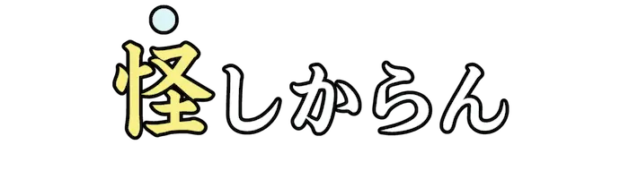 |
け | 道理に外れており、許しがたい。 |
| Lv03_Ca013_0002 | 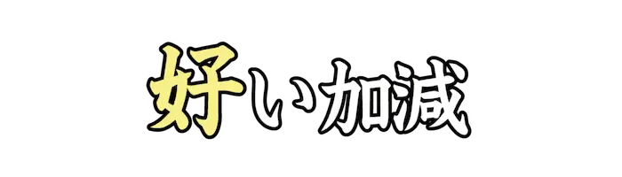 |
い | 最後までやらずに、途中で投げ出すさま。 |
| Lv03_Ca013_0003 | 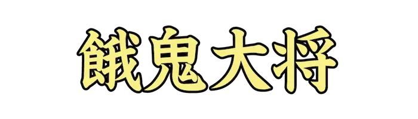 |
がきだいしょう | 子どもの集団の中で、一番威張っていて幅を利かせている者。 |
| Lv03_Ca013_0004 | 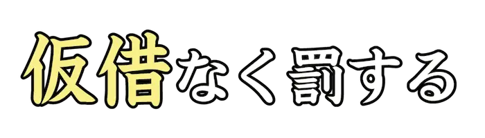 |
かしゃく | 『仮借なく』は、容赦せずに、見逃さずにという意味を表す語。 |
| Lv03_Ca013_0005 | 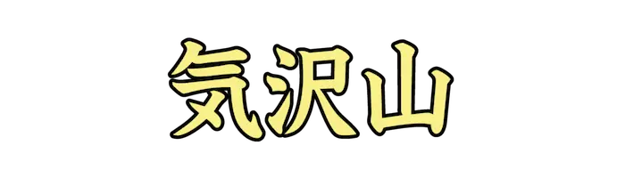 |
きだくさん | あちこちに興味や関心がうつること。また、そのような人。浮気者。 |
| Lv03_Ca013_0006 | くそどきょう | あきれるほど、ずぶとい度胸や気概。 | |
| Lv03_Ca013_0007 | 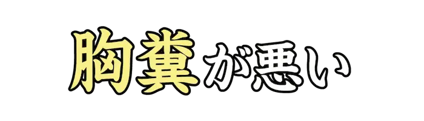 |
むなくそ | 不愉快なことがあって腹立たしい。また、気分が悪い。 |
| Lv03_Ca013_0008 | 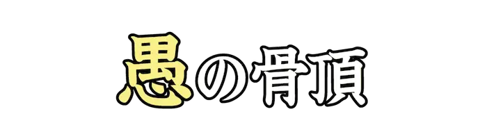 |
ぐ | この上なく愚かであること。 |
| Lv03_Ca013_0009 | 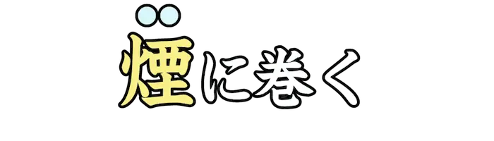 |
けむ | 相手がよく知らないようなことを言い立ててごまかしたり、呆然とさせる。 |
| Lv03_Ca013_0010 | けんだか | 気位が高く、相手を見下すさま。 | |
| Lv03_Ca013_0011 | ごしょうらく | 心配事を苦にせずに、のんきであること。 | |
| Lv03_Ca013_0012 | こっぱい | さんざんな目に。ひどく。『骨灰にけなされる』などと用いる。 | |
| Lv03_Ca013_0013 | さきくぐ | 人がこれから悪事をはたらくのだと思い、勝手に決めつけてしまうこと。 | |
| Lv03_Ca013_0014 | さへいじ | でしゃばったり、おせっかいをすることを指す隠語。 | |
| Lv03_Ca013_0015 | 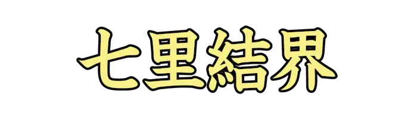 |
しちりけっかい | 人や物事をひどく<忌|い>み嫌って、近づけないようにすること。 |
| Lv03_Ca013_0016 | しらじら | 知っていて知らないふりをするさま。しらばっくれるさま。 | |
| Lv03_Ca013_0017 | 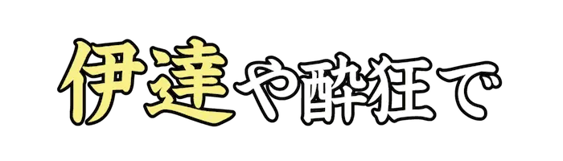 |
だて | 『伊達や酔狂でしているわけではない』で、本気で取り組んでいるというたとえを表す。 |
| Lv03_Ca013_0018 | ぞくぶつ | 名誉や利益ばかりにとらわれている、<趣|おもむき>の感じられない人物。 | |
| Lv03_Ca013_0019 | 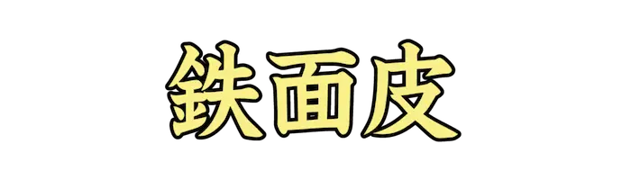 |
てつめんぴ | 恥を知らず、厚かましいこと。また、そのような人。 |
| Lv03_Ca013_0020 | てんぷら | 表面に衣をつけることから、外見だけ立派で中身は価値の低いもののたとえ。 | |
| Lv03_Ca013_0021 | 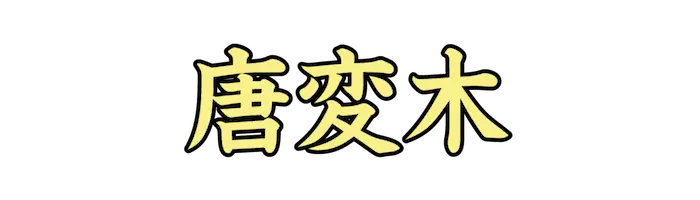 |
とうへんぼく | 気が利かなかったり、物分かりの悪い人。 |
| Lv03_Ca013_0022 | とんじゃく | 物事に関心が薄く、注意を払わない。 | |
| Lv03_Ca013_0023 | 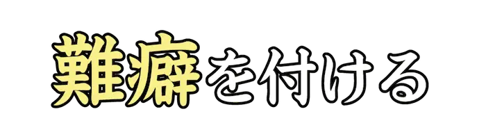 |
なんくせ | 些細な欠点を見つけ出して、大げさにそれをとがめ立てたり、けちをつけたりする。 |
| Lv03_Ca013_0024 | 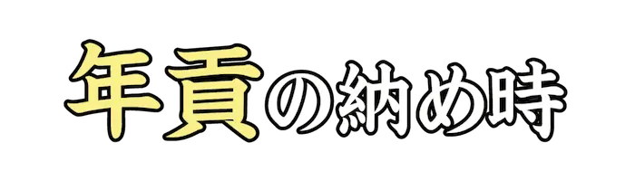 |
ねんぐ | 悪者が捕まり、刑に服するとき。転じて、物事を諦めなければならないとき。 |
| Lv03_Ca013_0025 | 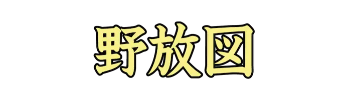 |
のほうず | 人を人とも思わない、図々しい態度。また、際限がなくしまりのわるいこと。 |
| Lv03_Ca013_0026 | 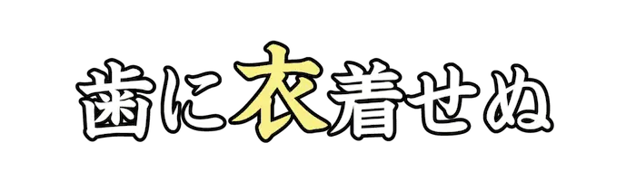 |
きぬ | 思ってることを、不快であるかに関わらず率直にずけずけと言うことのたとえ。 |
| Lv03_Ca013_0027 | ひきょう | 正々堂々としていないこと。臆病。 | |
| Lv03_Ca013_0028 | 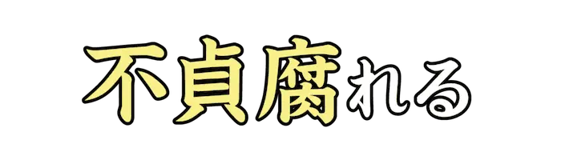 |
ふてくさ | 不平や不満があり、反抗的な態度をとる。 |
| Lv03_Ca013_0029 | 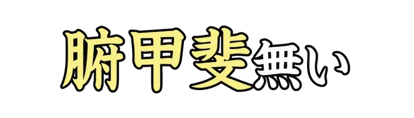 |
ふがい | 意気地がなく、なさけない。だらしがない。 |
| Lv03_Ca013_0030 | 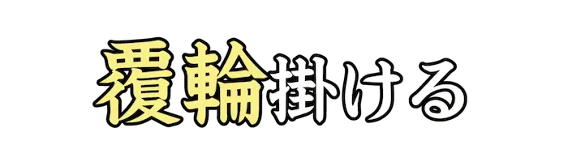 |
ふくりん | より一層はなはだしくなったり、酷くなる。 |
| Lv03_Ca013_0031 | 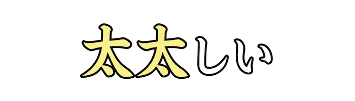 |
ふてぶて | 態度が大きく、厚かましい。ずうずうしい。 |
| Lv03_Ca013_0032 | 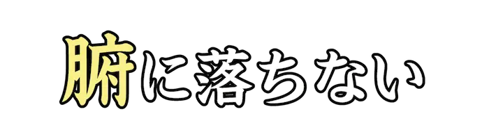 |
ふ | 納得が行かない。よく理解ができない。 |
| Lv03_Ca013_0033 | へんくつ | 素直ではなく、ひねくれた性格のこと。 | |
| Lv03_Ca013_0034 | 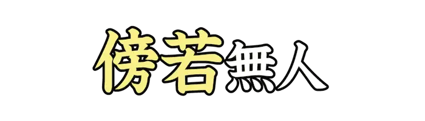 |
ぼうじゃく | 人前を気にせず、無遠慮にふるまうこと。 |
| Lv03_Ca013_0035 | 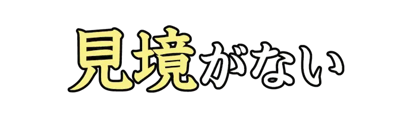 |
みさかい | 物事の区別をしない。わきまえずに、同じものとして扱う。 |
| Lv03_Ca013_0036 | 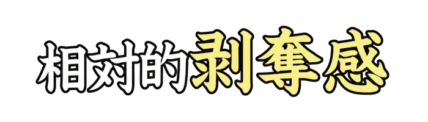 |
はくだつかん | 他人と比べたとき、得られるべき結果を奪われたように感じる不満などを表す用語。 |
| Lv03_Ca013_0037 | 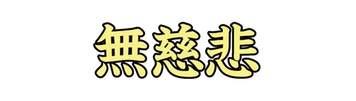 |
むじひ | あわれみの心がなく、むごいこと。 |
| Lv03_Ca013_0038 | 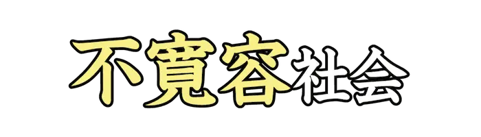 |
ふかんよう | 大衆とは異なる意見や価値観を受け入れず、排除しようとする社会のこと。 |
| Lv03_Ca013_0039 | 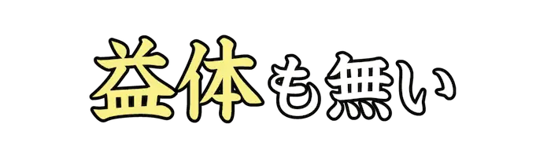 |
やくたい | 役に立たない。無益である。 |
| Lv03_Ca013_0040 | やじうま | 自分には関係のないことに口を出したり、興味本位で見物するような人。 | |
| Lv03_Ca013_0041 | 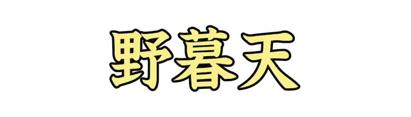 |
やぼてん | きわめて融通の利かないこと。また、全く洗練されていないこと。 |
| Lv03_Ca013_0042 | よまいごと | わけのわからないような、独り言や<愚痴|ぐち>。 | |
| Lv03_Ca013_0043 | 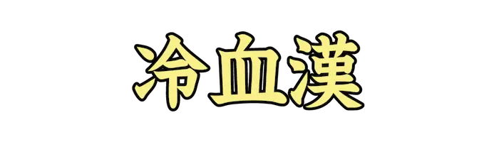 |
れいけつかん | 情け深さが全くない、心の冷たい男。 |
| Lv03_Ca013_0044 | あらさが | 他人に関する欠点や過失を探し出して、悪口を言うこと。 | |
| Lv03_Ca013_0045 | いんけん | 表面上では何気なく<装|よそお>っているが、内面では悪意を隠しているさま。 | |
| Lv03_Ca013_0046 | しゅうぐ | 合理的な判断の欠如などにより、社会体系や集団が愚かな方向に進むことを指す用語。 | |
| Lv03_Ca013_0047 | うちべんけい | 家の中などでは威張っているが、外では意気地がなくおとなしい人。 | |
| Lv03_Ca013_0048 | 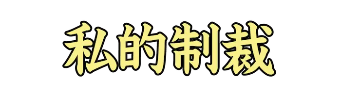 |
してきせいさい | 法的な手続きを受けずに、個人や集団が実行する制裁。私刑。 |
| Lv03_Ca013_0049 | しいてき | 気ままで、自分勝手にふるまうさま。 | |
| Lv03_Ca013_0050 | 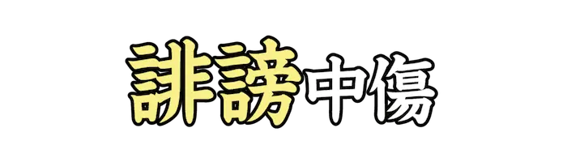 |
ひぼう | 相手に対する悪口を言ったり、ネットに発信したりする行為。 |
| Lv03_Ca013_0051 | 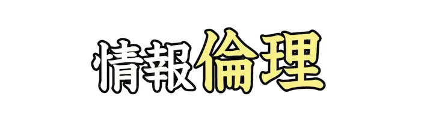 |
りんり | 人が情報や技術を正しく扱う上で必要なモラルやマナー。 |
| Lv03_Ca013_0052 | あお | 俗に、相手を挑発したり、不快になるような言動をする。 | |
| Lv03_Ca013_0053 | 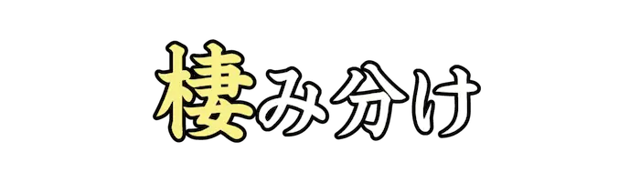 |
す | 趣味の違う者同士が、<相容|あいい>れることを避け活動範囲を分けること。ゾーニング。 |
| Lv03_Ca013_0054 | はと | 俗に、配信者とは関係ない、別の配信者の話をコメントなどでする行為。 | |
| Lv03_Ca013_0055 | 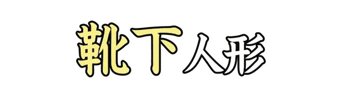 |
くつした | 俗に、ネットで芝居や偽装工作のために用意したアカウント。ソックパペットとも。 |
| Lv03_Ca013_0056 | 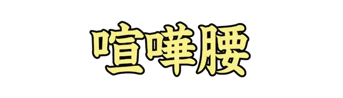 |
けんかごし | 今にも喧嘩を始めそうな、くってかかるような態度。 |
| Lv03_Ca013_0057 | 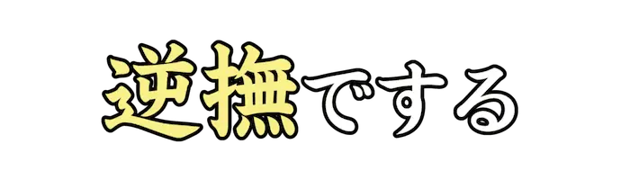 |
さかな | 意図的に、人が不快に感じたりするような行動をする。 |
| Lv03_Ca013_0058 | 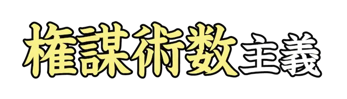 |
けんぼうじゅっすう | 目的のためなら、手段を問わない考え方。マキャベリズムとも。 |
| Lv03_Ca013_0059 | 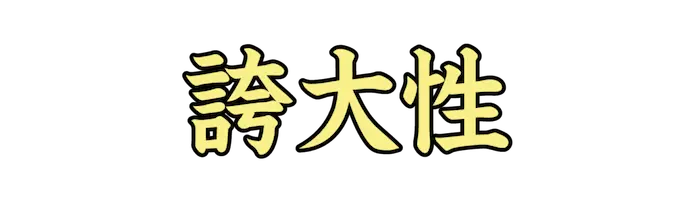 |
こだいせい | 自分を特別視したり過大評価して、非現実的な優越感を抱く心の傾向。 |
| Lv03_Ca013_0060 | 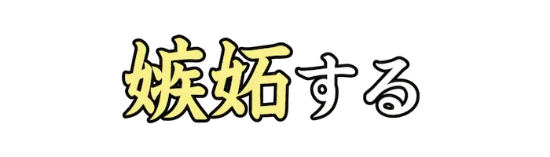 |
しっと | 自身より優れていると感じた人に対して、ねたましい感情を抱く。 |